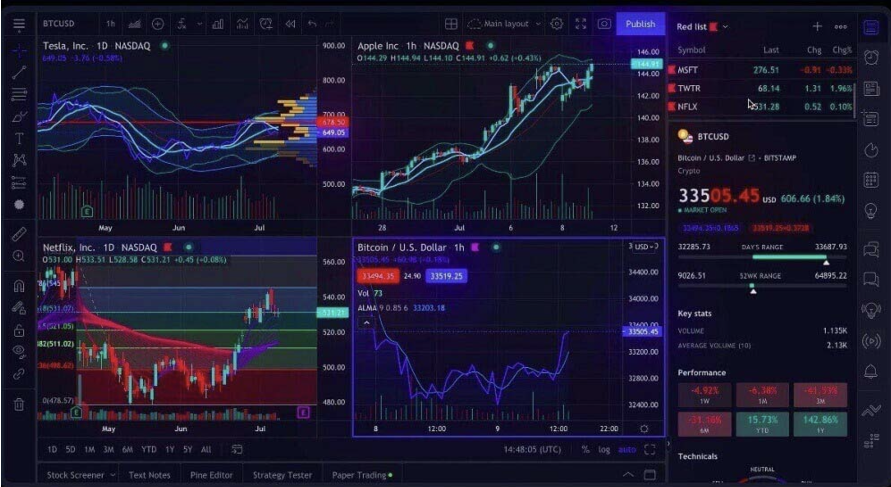
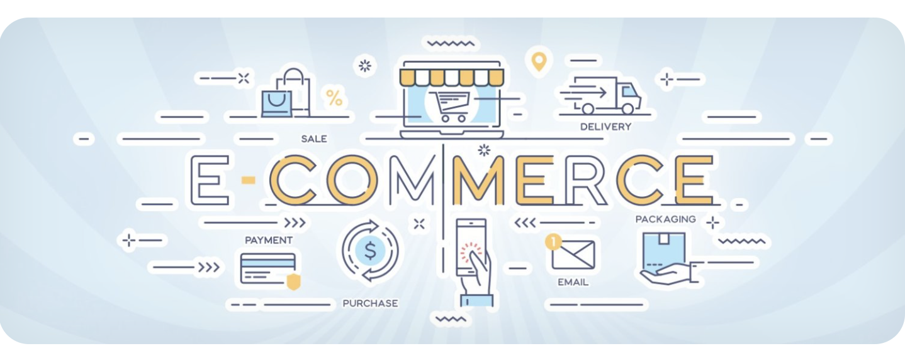

|

Trade is a primary economic concept which involves buying and selling of commodities and services, along with a compensation paid by a buyer to a seller. In another case, trading can be an exchange of commodities/services between parties. |

E-commerce, which stands for electronic commerce, is the purchasing and selling of goods and services over the internet. It enables organizations and consumers to execute online transactions, making worldwide shopping and business more convenient. |

"flappy_bird.py" is program related to the popular mobile game "Flappy Bird," developed by Dong Nguyen. The script may either be a recreation of the game or a tool designed to modify or analyze aspects of the game. |